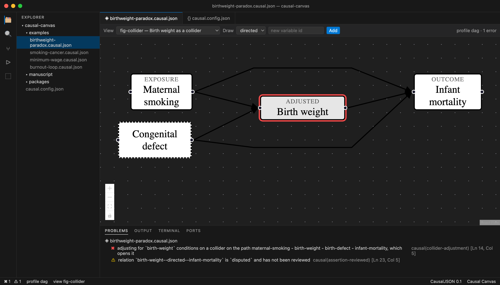
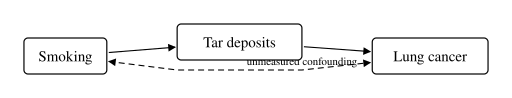
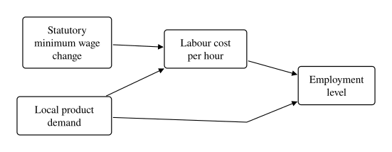
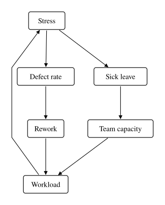

Draw causal models in VS Code.
Ship the JSON.
Causal Canvas is a visual editor for causal models whose real output is a plain, schema-validated JSON file — not a picture. The diagram is a projection you can throw away and regenerate. The model is the asset.
It also knows what a causal model means: it will tell you when you are adjusting for a collider, when an instrument violates the exclusion restriction, and when your exposure has no path to your outcome at all.

What it does
Four things, over one file.
A format, not a drawing
Models are .causal.json: JSON Schema-validated, JSON-LD-native,
diffable, and readable by anything. Layout lives in named views, so moving a box
never dirties the meaning.
A visual editor
A custom editor over the file text itself. Drag variables, draw relations, switch views. Undo, save, and git behave exactly as they do for any other file.
A causal linter
Collider adjustment, invalid instruments, unidentifiable latents, missing causal paths — reported in the Problems panel at the member that caused them.
Publication figures
SVG, vector PDF, and PNG from the same model. Byte-identical across runs, so figures are build artifacts your manuscript regenerates in CI.
Figures come out of the model, not a drawing tool
A view is a query over the model — a subset, a filter, a layout, a theme. Change the model, rebuild, and every figure that depends on it updates.



cld profile.
Why causal models matter now
Because agents have started acting, and acting is not predicting.
A language model is superb at correlation. Ask it what tends to accompany what, and it will tell you accurately, because that is what its training distribution encodes. Ask it what would happen if you intervened, and it will answer in the same confident register — but that is a different question, and text alone does not contain the answer.
This stops being academic the moment an agent stops summarising and starts deciding. "Should we change the pricing rule?" "Will adding this step reduce churn?" "What caused the regression?" Every one of those is an intervention or a counterfactual, and getting them wrong does not look like a hallucination. It looks like a plausible recommendation.
The three ways it goes wrong are all structural
- Confounding. Something drives both cause and effect, and nobody wrote it down. The correlation is real; the advice is wrong.
- Colliders. Controlling for the wrong variable creates a spurious association. This is the failure that makes low birth weight look protective against infant mortality — the one on the screenshot above.
- Mediators. Adjusting for a step on the causal path erases the very effect you were trying to measure.
None of these is detectable in the data or in the prose. They are properties of the structure — which means they are detectable once the structure is written down in a form a machine can read.
What a causal model gives an agent that retrieval cannot
A knowledge graph stores facts. A causal model stores mechanism: not "these two things co-occur" but "this one moves that one, and here is what you must hold fixed to see it." That is a structure an agent can be checked against rather than merely prompted with.
And because it is machine-checkable, an agent can be wrong in a detectable way. That is the property that makes automation safe. An agent that proposes sixty edges from a literature sweep is useful only if you can tell which sixty you actually vouched for — so every relation can carry its own provenance:
{ "from": "genotype", "to": "cancer", "kind": "bidirected",
"assertion": {
"status": "proposed", // proposed | accepted | disputed | rejected
"assertedBy": "claude-opus-5",
"confidence": 0.6,
"rationale": "Shared susceptibility locus at 15q25",
"evidence": ["doi:10.1038/ng.3260"]
} }
An agent's contribution becomes a reviewable diff that flips
status on the edges that survived and deletes the rest. Your linter can
refuse to publish a figure while anything in it is still proposed. The
model stays trustworthy while a machine works on it.
There is a CLI, and it is the point
The editor is optional. The file and the command line are not.
Text-friendly
Relations are written the way every causal syntax in the world writes them — as arrows. A complete model is six lines, and you can type it.
{
"causal": "0.1",
"profile": "dag",
"variables": ["smoking", "tar", "cancer"],
"relations": ["smoking -> tar", "tar -> cancer"]
}Longer form is there when an edge earns it — a kind, a confidence, a citation — but you never pay for it up front.
GitHub-friendly
Because the model is text and layout is quarantined into views, a pull request shows what actually changed about the claim:
"relations": [
"smoking -> tar",
"tar -> cancer",
- "smoking -> cancer"
+ { "from": "smoking", "to": "cancer", "kind": "bidirected",
+ "assertion": { "status": "accepted", "rationale": "unmeasured confounding" } }
]And CI can gate on it. This is a real check, not an aspiration:
# fails the build if any figure contains an unreviewed or uncited edge
$ causal lint manuscript/models/*.causal.json
# figures are build artifacts, regenerated from source
$ causal render model.causal.json --all --format svg --out figures/Coding-agent-friendly
Agents edit these files with the tools they already have. What they cannot do is compute graph structure by reasoning — so the CLI does that, and speaks in structured output an agent can act on.
$ causal lint model.causal.json --json
{
"results": [{ "diagnostics": [{
"rule": "collider-adjustment",
"severity": "error",
"message": "adjusting for `birth-weight` conditions on a collider …",
"pointer": "/variables/1", // exact member, not just the file
"line": 14, "column": 5
}] }]
}-
Self-correcting. The schema is closed, so a typo like
exposreis rejected rather than silently ignored — and the error names the member. - Precisely located. Every diagnostic carries a JSON Pointer, so an agent fixes one field instead of rewriting the file.
-
Context-budgeted.
causal summarizecollapses a 3,000-line model back into arrow shorthand that fits in a context window — and re-reads as the same model. - Preserving. Any tool that reads and writes a document must return every extension member untouched. That is a specification requirement, covered by tests.
The format
Boring on purpose, so other tools can read it.
-
JSON Schema (2020-12). Validation and completion in any editor, from
a
$schemaURL or the bundled copy. - JSON-LD native. The normalized document lifts to RDF, with relations as first-class reified entities — so models compose with knowledge graphs and agent memory instead of being a dead end.
-
Four structural profiles.
dag,admg(unmeasured confounding),pag(causal discovery output), andcld(feedback loops). Bayesian-network and structural-equation content attach as additive layers, not separate formats. -
Extensible without forking. Anything under an
x-prefix is yours, is never validated, and is never lost. - Interoperable. Exports to DAGitty, DOT, GML, Mermaid, and ready-to-paste R and Python snippets — lossy by construction, with the loss documented rather than hidden.
We track nothing
Not a policy choice you have to trust. An architectural one you can verify.
The software makes no network requests. No telemetry, no analytics, no crash reporting, no licence check, no update ping. The JSON Schema and the JSON-LD context are bundled into the tool, so validation and rendering work fully offline and on air-gapped machines.
- Your models never leave your machine. There is no account, no sync, no cloud component — there is no server to send anything to.
- Figures are rendered locally. No browser, no display, and no network are needed to produce SVG, PDF, or PNG.
- This website loads no fonts, no scripts, no frameworks and no images from anywhere else. Open the network tab: everything comes from this domain.
- No cookies. No local storage. No fingerprinting. Nothing to consent to, which is why you were not asked.
- The source is Apache-2.0. You do not have to believe any of the above — you can read it.
The one thing we will not pretend: this site is served by GitHub Pages, and GitHub records server access data such as your IP address in order to deliver it. We have no access to those logs and no analytics on top of them. The details are in the Datenschutzerklärung.
Get started
$ git clone https://github.com/Volland/causal-canvas
$ cd causal-canvas
$ pnpm install && pnpm run build
# lint the bundled examples
$ node packages/cli/dist/bin.js lint examples/*.causal.json
# render a figure
$ node packages/cli/dist/bin.js render examples/smoking-cancer.causal.json \
--view fig-frontdoor --format svg --out figures/
Then open the repository in VS Code and press F5 to launch the
extension, and open anything under examples/.